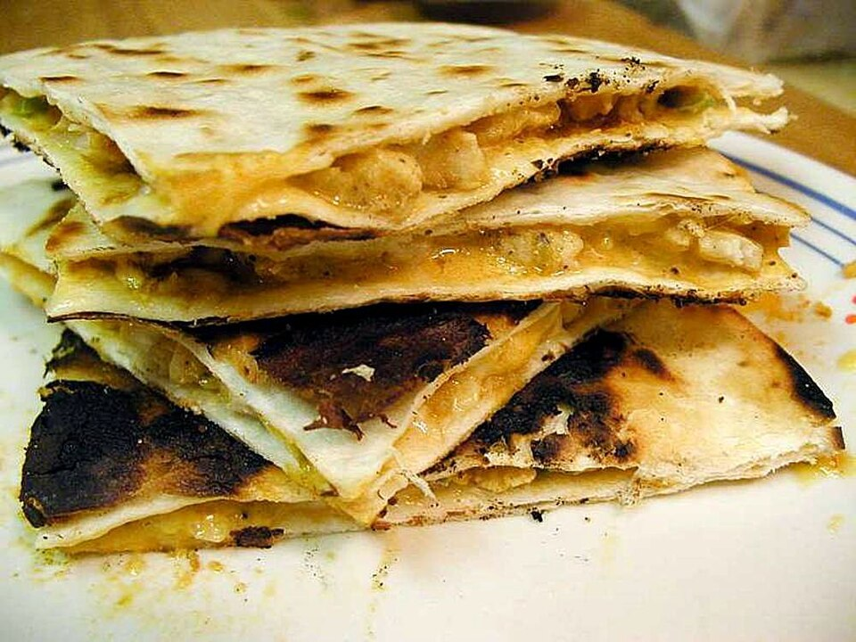

Home
Chicken Quesadillas
Description: A Mexican-inspired dish featuring a folded tortilla
stuffed with melted cheese and seasoned, cooked chicken.

"Chicken Quesadilla" by Jon Sullivan
Ingredients:
- 1 tbsp oil
- 1 lb chicken breast
- 1 tsp garlic powder
- 1 tsp salt
- 1/2 tsp paprika
- 1/2 tsp onion powder
- 1/2 tsp black pepper
- 1 bunch green onions
- 2 roma tomatoes
- 1/2 yellow onion
- t tbsp unsalted butter
- 6 flour tortillas
- 2 cups Mexican cheese blend
Prep:
- Dice onion
- Dice green onions
- Dice roma tomatoes (Discard watery insides)
- Dice chicken into small cubes
- combine spices into a small bowl
Cook:
- Preheat a skillet with oil on medium heat.
Add in the chicken and seasonings. cook for 4 minutes
- Add in the green onions, tomatoes, and onions.
Cook for another 5 minutes or until chicken fully cooked through.
Set aside.
- On a clean skillet, add a bit of butter or oil and place a tortilla on top.
Add Mexican cheese and chicken mixture to one half of the tortilla.
Top with more cheese if desired. Fold the tortilla over to close.
- Cook for a few minutes until tortilla is goldern on one side,
flip and cook until other side golden brown as well.
- Repeat for the rest of the quesadillas.